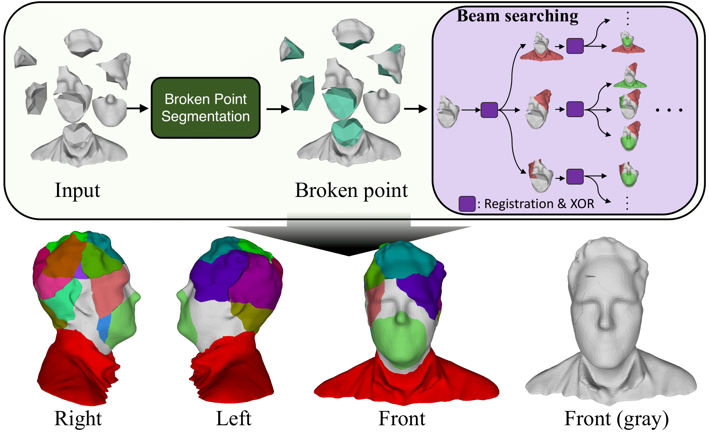

Jinhyeok Kim,
Inha Lee,
Kyungdon Joo,
Artificial Intelligence Graduate School, UNIST

Reassembling broken fractures back to their original shape remains a complex challenge. While prior research has demonstrated impressive results in domain-specific assembly, these methods largely depend on human-designed structural priors or struggle with assembling diverse shapes.
To tackle this issue, we introduce a new fracture assembly framework based on segmentation and iterative registration, so-called FRASIER.
By finding broken regions of fractures by segmentation, FRASIER dramatically increases overlap region ratios between fractures, which allows us to align fractures by registration.
In addition, we employ point cloud XOR and beam search to make our framework robust. Experiments demonstrate that FRASIER outperforms state-of-the-art methods.
Website template from Breaking Bad. We thank the authors for the open-source code.